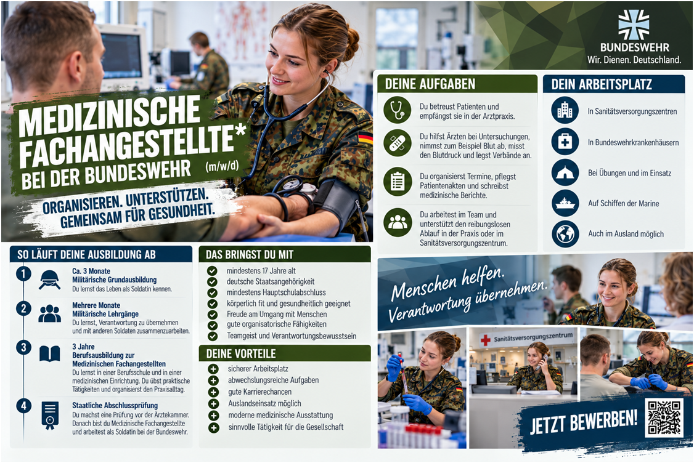

Medizinische Berufe bei der Bundeswehr
Leseverstehen: Medizinische Fachangestellte · Übungen 1–3

1. Multiple Choice (MC)
Welche Antwort ist richtig? A, B oder C? Kreuzen Sie an!
2. Richtig oder falsch? (R/F)
Lesen Sie die Aussagen und entscheiden Sie: Richtig oder falsch?
3. Offene Fragen (OF)
Beantworten Sie die Fragen in ganzen Sätzen und möglichst mit eigenen Worten. Diese Aufgabe ist nicht interaktiv. Bereiten Sie Ihre Antworten für das Gespräch im Unterricht vor.